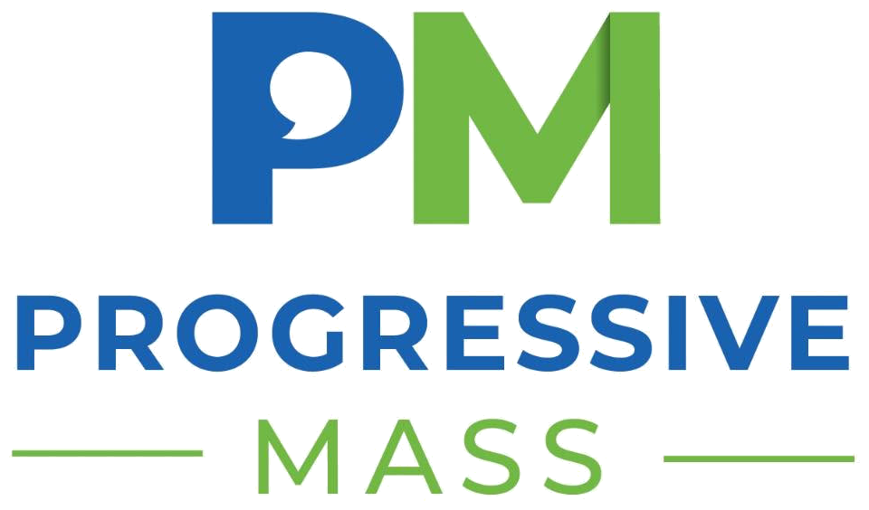

Endorsements
People are
standing with Lisa.
From nurses and neighbors to sitting Select Board members — support is growing across Canton, Stoughton, and Avon.
Organization Endorsements
Endorsed by
organizations that matter.
"The MNA has endorsed Lisa Lopez for State Representative in the 6th Norfolk district. Lisa is committed to improving access to affordable and quality healthcare, and preserving medical, rehabilitative, educational, recreational, habilitative and transitional services for children and young adults at the Pappas Rehabilitation Hospital for Children in Canton. We look forward to working with her in the Massachusetts House."Katie Murphy, PresidentMassachusetts Nurses Association · practicing ICU nurse

"Lisa Lopez has been a champion for housing affordability, bold climate action, and public health as a local. She understands the importance of building broad, effective coalitions and of taking initiative in policymaking, and she would make an excellent state representative."Progressive Massachusetts
"The MWPC PAC is proud to be endorsing Lisa Lopez for State Representative for the 6th Norfolk district. Lisa has been committed to uplifting and protecting women her entire career and is dedicated to carrying that commitment forward in the State House. She is an advocate for expanding access to affordable education and healthcare. The MWPC PAC is excited to be supporting Lisa Lopez in this race and recommends her for your vote."Caitlyn ClarkeMWPC PAC Chair
"Lisa Lopez has built coalitions and won on the local level for clean energy and green open space. She has the track record and values to be a state representative that environmental voters can count on."Celia DoremusChair, Mass Sierra Club Political Committee
Canton Select Board
Her colleagues are
with her.
She served on Canton's Select Board. Now a majority of its sitting members are backing her for Beacon Hill.
"She has accomplished so much in moving Canton forward. For me,
it's her instrumental role in getting the Community Preservation
Act passed in 2012, and then turning the Plymouth Rubber site
into the
Paul Revere Heritage Site."
Trish Boyden
Vice Chair, Canton Select Board
"She has consistently demonstrated exceptional service to our
community in both elected and volunteer roles. Her intelligence,
expertise, analytical thinking and unwavering commitment will be
significant assets to the entire 6th Norfolk district."
Susan Harrington
Member, Canton Select Board
"I hope you will join me in supporting Lisa Lopez for this seat.
As a former Select Board member, Lisa is a fierce advocate for
many of the causes I hold dear both here in Canton and beyond.
She is one of the smartest, most strategic thinkers I know, and
she rises to every challenge. More than just a thinker, Lisa is
a doer. Having her represent Canton, Stoughton, and Avon at the
State House would be a massive win for our communities."
Julie Beckham
Member, Canton Select Board
Community Voices
From
across the district.
"As a pediatrician working in Boston for my entire career, I
learned first hand that for children to be healthy they need
decent and stable housing in a safe neighborhood with good
schools and access to affordable childcare. Lisa Lopez will help
achieve these goals, and that's why we need her in our State
House."
Barry Zuckerman, MD
Chair Emeritus, Department of Pediatrics, Boston Medical Center
"Lisa does not just talk about change. She creates it. She
inspired me to step up and improve the community where we live,
having been the catalyst behind our annual Town Wide Cleanup now
involving hundreds of enthusiastic volunteers and supporters.
She challenges people to contribute. She builds momentum. She
follows through."
Jeff Sullivan
Canton Resident, 19 Years
Join the Campaign
Ready to
get involved?
Knock doors, make calls, or host a neighbor conversation. Every hour you give moves us closer to Beacon Hill.
Volunteer NowSupport the Campaign
Chip in to
make it happen.
Local campaigns run on local support. Any amount helps us reach voters across Canton, Stoughton, and Avon.
Donate